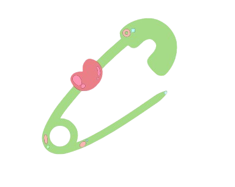
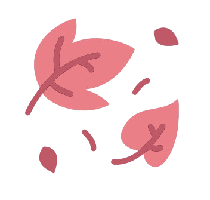
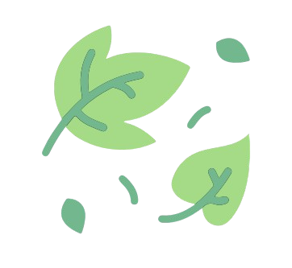
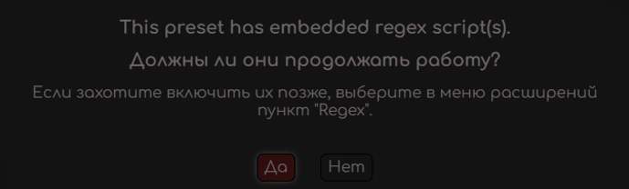
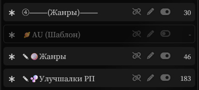
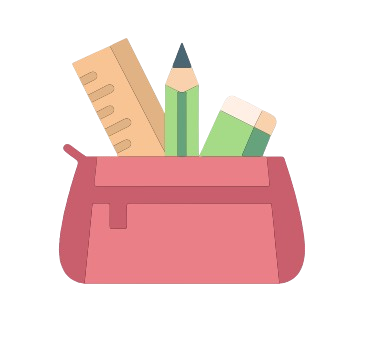

 О Пресете
Модульный пресет с огромным количеством тоглов, основанный на ядре Селии.
Поддерживаемые модели:

Gemini 2.5/3.0 pro

Claude Sonnet 3.7, 4, 4.5, Opus 4.1, 4.5
Вроде как: DeepSeek Chimera R1T2, Terminus, GPT 5.1
- Обновлён промпт на фф режим.
- Инфа: как по мне клодик на темпе 0.95 пишет получше, можете поставить её.
- Фикс языков, вроде больше на импут не полагается (по крайней мере не настолько) в этом вопросе и пишет на языке что указан.
- Фикс ролей, лучше слушается вроде.
- Фикс банов.
- Думалка переписана.
- Перестановки.
- Фикс темпа, вроде перестал таймскипать как уебан (переделала промпт слоуберна, быстрый темп пока не трогала но ему тоже скоро по жопе дам)
- Чуток фикс нарратива.
- Всё-таки добавила тогл на язык в начале. Его варики есть на сайте, но можете вручную буквально два слова поменять.
- Пресет похудел до 77 КБ.
- Изменён характер Ренетт, теперь он не Селийский.
- Склеены некоторые тоглы типа Тип РП и Тонов.
- Добавлена система с шаблонами и заменяемыми/дополняемыми тоглами.
- Переделана думалка и теперь она сегментированная.
- На самом деле переделок супер дохрена что мне даже лень о них писать.
- Пресет похудел в два раза (с 431 КБ до 226 КБ).
- Перелопачено СЛИШКОМ много всего.
- Убраны многие настройки, добавлены новые.
- Впредь будет более плотная интеграция сайта. Будет добавлен раздел "промпты" чтобы можно было вставить или менять их в пресете.
- Починены Цветные Диалоги и Цветные Акценты.
- Починены форматы.
- Добавлена поддержка новых моделей.
- Попытка фикса HTML.
- Новый дизайн пресета.
- Исправление ошибок.
Инструкции
Здесь собрана вся необходимая информация для комфортного использования пресета. Разверните нужный раздел, чтобы прочитать.
Скачайте файл
Перейдите во вкладку "Скачать" и загрузите последнюю версию JSON файла пресета.
Импорт в SillyTavern
Перед установкой, убедитесь, что в настройках подключения API стоит "Chat Completion".
Затем открываем вкладку пресетов (самая левая кнопка) и вставляем пресет как показано на скрине.

Активация RegEx'ов
Затем нажимаете «да» и у вас должно импортироваться 2 регекса.
Форматирование размышлений
Заходим в раздел формата ответа ИИ (третья кнопка слева), листаем вниз, разворачивает "форматирование размышлений" и ставим всё точно так же как на скрине.

Выбор Промптов
Многие промпты являются "Шаблонами" либо "Заменяемыми".
Шаблоны - полностью пустые тоглы, в которые вставляется один или более (где возможно больше) промптов. Они так и подписаны: ✎🧺Штуки (Шаблон). В Штуки много.
ООС
Ренетт – аналог Селии. Добавляет в конце/начале мысли Ренетт.
✧⚙️Отключить ООС - Ренетт ничего не будет писать.
✧🍎Ренетт ООС - будет писать подобные комментарии в начале/конце поста.
Основное
Четыре раздела. 🌾Режим Письма, 🧠Анти-Изм и 📏Длина - заменяемые и их описания и варианты можете увидеть во вкладке "Промпты" (И что стоит по-дефолту. Я вообще часто буду туда отслывать, там много описаний). Напомню - ✧ в начале названия значит что функция не смешивается с другими вариантами из той же категории.
🍏Нарративный Стиль всегда должен быть включен, он пока один, основной.
Карты
⛓️Карта Персоны, ⛓️Карта Чара, •⤵Мир (До), •⤴︎Мир (После) не отключаем никогда.
✧🧩Меньше Внимания к Юзеру/✧⭐Больше Внимания к Юзеру понятно по названию.
🪄Синтез Знаний - ИИ может расширять знания о персонажах, используя какие-то факты.
⛓️Детали Групповых Карт - включаете если групповой чат, но они баганные так что смысла в этом мало.
Жанры
Настройки жанров и улучшалок РП + АУ. Про них всех есть в разделе "Промпты", так что выделю только одно напоминание - здесь начинаются тоглы с ✎ в названии: в ✎🥥Жанры и ✎🫧Улучшалки РП можно закинуть НЕСКОЛЬКО промптов из этого раздела (вкладка "Промпты", опять), в 🪐AU (Шаблон) можно закинуть только ОДИН промпт на АУ из предложенных (и да, это шаблон, изначально там нет никаких промптов). В жанрах и улучшалках по-дефолту (из коробки) находятся (это указано во вкладке промпты как "По-дефолту:..."), так что если добавляете свои УДАЛИТЕ перед эти старые промпты внутри тогла.
Рейтинг
Первые три - настройки рейтинга (выбрать только один).
Четвёртый: дополняемый тогл, изначально там только один промпт из предложенных, но можно добавить несколько (после копирования во вкладке "промпты", заходя в редактирование этого промпта надо удалить всё содержимое там изначально. Так же и с жанрами и улучшалками РП, забыла сказать). Описания примерные знаете уже где, в красках я писать не буду, сайт публичный.
🫀Без Рогатого (No Horny) - регулирует реализм романтических и интимных сцен: она делает влечение и интерес персонажей естественными, зависящими от контекста, настроения и отношений, а не постоянными или мгновенными.
Патчи
❌Баны - зайдите в промпты и скопируйте язык на котором ролите. По-дефолту в пресете - Русские баны.
🔍Анти-Повторения - не выключать, борьба с эхо.
👤Анти-Местоимения - уменьшает количество "Он, Она" в начале предложений и заставляет ИИ заменять это на описательные названия "Наследик", "Бариста", "Красноволосый" и тд и тп. Включайте желательно только на менее доходчивых моделях типа 2.5 про гемини - клодики вас задолбают во время интимных сцен этими "Наследник клана...".
Доп
Важно: Вот эти стрелочки вверх и вниз: ⬇️⬇️⬇️ и ⬆️⬆️⬆️, вы включаете только если используете функции "между" ними, то есть любые настройки из блока.
Функции после пустого пробела (как и в ООС, к слову) являются дополнительными и без функций выше не нужны.
🎨Цветные Диалоги - ИИ будет окрашивать Диалоги в разные цвета (присваивать каждому персонажу свой цвет).
🌿Цветные Акценты - тоже окрашивание текста, но уже только некоторых слов, акцентов.
🧃HTML - красивые HTML блоки, иногда интерактивные + картинки, два примера будут ниже (они слишком разные, много примеров нет смысла делать), их качество зависит ещё и от выбранной модели. Самые крутые всё ещё делает на моей памяти только Gemini 2.5 pro. Тройка и клоды справляются с переменным успехом, но тоже неплохо.
✎🧺Штуки (Шаблон) - большой блок, изначально пустой, наполнение его знаете где искать (там же есть и примеры + скриншоты).
🌗Тема HTML - заменяемый тогл, тёмная/светлая тема HTML, изначально тёмная, но можно заменить, промпт сами знаете где.
Думалка
Важно: Если хотите играть не на русском: зайдите в [Main Checks] и измените два слова на нужный язык (скрин ниже)
Если играете с моделькой без думалки или просто хотите без неё поиграть (для гпт допустим так делают чтобы цензу меньше ловить) то отключайте вообще вот ВСЕ тоглы ВКЛЮЧИТЕЛЬНО от think до /think.
Префил
Префилы. Включайте в зависимости от вашей модели.
Если юзаете дипсик: отрубите оба, для гпт: тоже отрубите хотя можете попробовать его и с префилом клода. Про остальные модели ничего не знаю.
Или "переключатель". Ну то есть буквально любая настройка. ✧⚙️Отключить ООС, ✧🍎Ренетт ООС, 🌾Режим Письма и т.д. это всё ТОГЛЫ. Внутри них и есть все промпты.
Набор предустановленных инструкций (промптов) для нейросети, который задает её поведение, стиль речи и логику.
В моём пресете - любые тоглы с припиской "(Шаблон)" - пустые. В них можно вставить промпты из вкладки "Промпты" на сайте.
OOC - ключевой рычаг воздействия на историю и общения с Ренетт. Пишите либо просто OOC: текст, ну либо в квадратных скобках как делаю я: [OOC: текст].
 Обратная Связь
Следите за обновлениями и задавайте вопросы в нашем сообществе.
Авторы Промптов
Особые Благодарности
Промпты
Здесь собраны модули. Разверните категорию, выберите вариант и нажмите "Копировать" (либо выберите несколько вариантов и большую кнопку скопировать внизу блока). Затем переходите в таверну, удалите из нужного тогла содержимое и вставьте то, что скопировали.
✧ — выберите только один вариант.
✎ — можно добавить несколько вариантов.
Нет дополнительных вариантов.
🌾Режим Письма
❌Баны
🌐Язык
📓Литературный Стиль
🌱 Темп
📏Длина
👁️ Посмотреть описание
3-4 больших параграфа
👁️ Посмотреть описание
6 больших параграфов.
👁️ Посмотреть описание
10+ больших параграфов.
👁️ Посмотреть описание
Эта функция отменяет жёсткие ограничения по объёму текста и передаёт контроль над длиной ответа самому ИИ.
👁️ Посмотреть описание
Эта функция устанавливает строгий математический лимит на объём текста. Вы можете изменить минимальное-максимальное значение вручную, как показано на скрине.

Нет дополнительных вариантов.
🧃HTML
✎🧺Штуки (Шаблон)
✎ Можно смешивать:
👁️ Посмотреть описание
Добавляет флешбек в 「...」.

👁️ Посмотреть описание
Эта функция — как набор режиссёрских инструментов для ИИ. Она говорит ему не просто писать текст сплошным потоком, а активно использовать специальные знаки-переходы (вот такие: ∆ ... ∆), чтобы красиво структурировать историю, менять сцены и показывать мысли героев. Промпт огромный.

👁️ Посмотреть описание
Эта функция просит ИИ использовать в истории названия реальных вещей, мест и культурных явлений. Клод справляется и без этого.
👁️ Посмотреть описание
Эта функция требует от ИИ оформлять каждый ответ как отдельную главу онлайн-романа (веб-новеллы или ранобэ), имитируя стиль популярных сайтов с переводами.

👁️ Посмотреть описание
Эта функция добавляет в конце каждого ответа специальную секцию, в которой разрушается «четвёртая стена». Персонажи на мгновение становятся «актёрами», которые играли эту сцену.

👁️ Посмотреть описание
Генерация большого мема в начале соо на основе текущей ситуации.
👁️ Посмотреть описание
Эта функция требует от ИИ визуально оформлять текст, который физически существует в мире игры, используя HTML/CSS стили и разные шрифты.

👁️ Посмотреть описание
Эта функция требует от ИИ полностью прописывать текст песен, которые звучат в истории или исполняются персонажами, делая субтитры внутри символов нот.

✧ Эксклюзивные (Только ОДИН из группы):
👁️ Посмотреть описание
Инфоблок. Самая лёгкая версия на 146 токенов.

👁️ Посмотреть описание
Инфоблок. Версия на 866 токена.

👁️ Посмотреть описание
Инфоблок. Версия на 1126 токенов.

👁️ Посмотреть описание
Инфоблок. Версия на 1366 токенов.

👁️ Посмотреть описание
Инфоблок. Версия на 1548 токенов.

👁️ Посмотреть описание
Это хардкорный режим CYOA, превращающий историю в настоящую настольную RPG (как D&D).

👁️ Посмотреть описание
Это сюжетный режим, похожий на визуальные новеллы или интерактивные книги (как игры от Telltale).

👁️ Посмотреть описание
Эта функция требует от ИИ автоматически создавать и прикреплять досье (профиль) для каждого нового оригинального персонажа, который впервые появляется в сюжете в конце поста.

👁️ Посмотреть описание
Эта функция требует от ИИ симулировать и отслеживать события, происходящие параллельно с основной историей, но в других местах («за кадром»).

👁️ Посмотреть описание
Эта функция служит рабочим блокнотом или планировщиком для ИИ. В нём он фиксирует свои мысли о развитии сюжета, которые обычно остаются невидимыми.

👁️ Посмотреть описание
Эта функция внедряет в повествование скрытую механику симулятора свиданий, заставляя ИИ отслеживать отношения с персонажами в цифровом и сюжетном формате.

👁️ Посмотреть описание
Эта функция превращает текстовый чат в полноценный графический интерфейс (UI), используя сложный HTML и CSS дизайн. Она делает игру похожей на визуальную новеллу или RPG-игру.


👁️ Посмотреть описание
Оставляет только основной блок локации.
👁️ Посмотреть описание
Оставляет только блок мыслей.
🌗Тема HTML
Нет дополнительных вариантов.
Нет дополнительных вариантов.